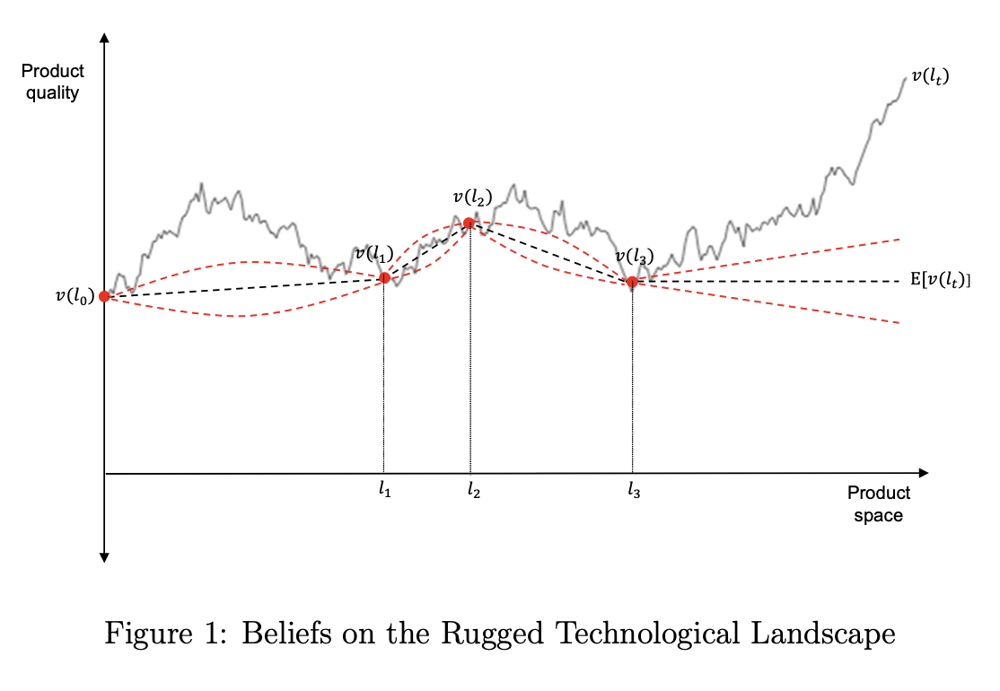
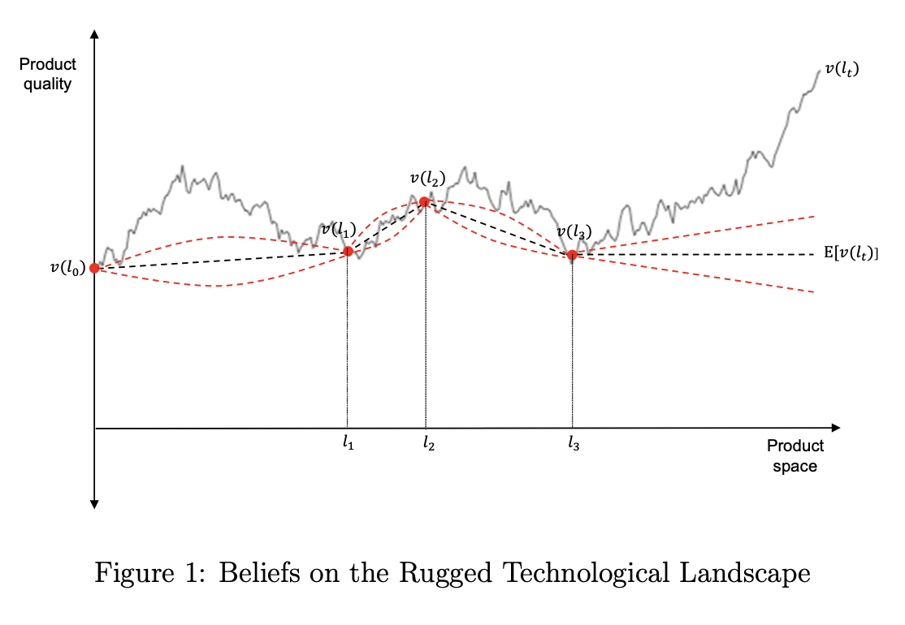

TLDR: in most cases people aren’t limited by the quantity of information available, but by the interpretation of that information.
Most signals we deal with are high-dimensional (sensory stimuli, images, text, audio), but they can be represented as coming from a low-dimensional space. People have imperfect knowledge of the mapping, i.e. how to recover the low-dimensional structure from the high-dimensional. (the “Manifold hypothesis” – Bengio, Courville, and Vincent (2013) ).
Observations about high dimensionality of the world.
- Most signals are redundant. If you remove a word, or a few pixels, or a snippet of audio, then comprehension is hardly affected, and the missing data can be reconstructed with high confidence. (Markov blanket)
- It’s been hard to teach computers high-dimensional problems. Computers could beat humans at linear regression since the 1960s, but it took them another 50 years to perform well with high-dimensional signals (text, audio, images).
- Unsupervised learning is valuable. Unsupervised learning helps us do dimensionality reduction, & so generalizes to other areas. Likewise cross-training is valuable: learning to predict cats makes us better at predicting dogs.
- Perception is dimensionality reduction. Processing of sensory data recovers \(\hat{v}_1,\hat{v}_2\) from \(x_1,\ldots,x_M\).
Implications.
- Implication: experience is more valuable than bandwidth. Growth in \(n\) is more valuable than growth in \(p\).
\[ \xymatrix@R=1em@C=.5em{ \txt{low-\\dimensional\\state} & \txt{high-\\dimensional\\signals} & \txt{low-\\dimensional\\representation} \\ & \boxed{x_{1}}\ar[dddr]\ar[dr] \\ v_1\ar@{-}[ur]\ar\ar@{-}[r]\ar\ar@{-}[dddr]\ar\ar@{-}[ddr] & \boxed{x_{2}}\ar[ddr]\ar[r] & \hat{v}_1\\ {\tiny\vdots} & {\tiny\vdots} & {\tiny\vdots} \\ v_q\ar@{-}[uuur]\ar@{-}[uur]\ar@{-}[r]\ar@{-}[dr] & \boxed{x_{p-1}}\ar[r]\ar[uur] & \hat{v}_q\\ & \boxed{x_{p}}\ar[ur]\ar[uuur]} \] Note that the connections between \(\bm{v}\) and \(\bm{x}\) are not directional (they don’t have arrowheads), the latent state doesn’t necessarily cause the signal, they are jointly determined. However the signals do cause the representation (\(\hat{\bm{v}}\)).
Formal Setup
\[x = A v + e\]
\[\begin{aligned} x &\in \mathbb{R}^p && \text{observation (image, text, sound)}\\ v &\in \mathbb{R}^q && \text{state (objects, meaning, words)}\\ p &\gg q && \text{(observations higher dimensionality than state)}\\ A &\in \mathbb{R}^{p\times q} && \text{mapping} \\ e &\in \mathbb{R}^q && \text{noise} \end{aligned} \]
Implications of High-Dimensional Signals
- Redundancy. If one part of a signal is removed then it’s possible to reconstruct it from the rest of the signal.
Model with High-Dimensional Signal
\[x = Av\]
You want to know \(E[v_1|x]\), but you don’t know \(A\). 1
The model from imitation. There are a set of \(n\) questions, each is a vector of \(p\) attributes, this is not stochastic. Each question has a scalar answer \(a^i\), and you infer weights given \(\bm{a}=Q\bm{w}\).
\[\begin{aligned} \bm{a} &=Q\bm{w} \\ \ut{\bmatrix{a^1 \\ \vdots \\ a^n}}{answers} &= \ut{\bmatrix{q_1^1 w_1 + \ldots q_p^1w_p \\ \vdots \\ q_1^n w_1 + \ldots q_p^nw_p}}{questions} \\ \hat{\bm{w}} &= Q'(QQ')^{-1}\bm{a} \end{aligned} \]
Application to Perception
Perception wrongly treated as compression. It’s clear in many cases of perception that the signal is high-dimensional, yet there are some weird anomalies. A common model is that the signal is compressed and then reconstructed. E.g. Sim, Woodford, compressed sensing, etc.
The compression problem has some subtle differences from the inference problem.
Application to Recommendation
In short.
We want to predict a person’s response to an item. The item could be a post, a song, a video, an advertisement, a product. The person’s response could be clicking, purchasing, upvoting, or labelling as toxic.
Model: low-dimensional semantics. I will state a simple model of human judgment and then try to describe some of the facts we observe about recommendation. Assume that the content of each item (pixels, characters, etc.) can be represented in a low-dimensional space, the “semantics.” Each person’s response is fully determined by the semantics, though different people have different weights.
World without computers. There are many practical decisions people make about others’ judgments: will people like this concerto? how many copies is this book likely to sell? is this painting obscene? Then we can use a mixture of our own judgments and simple statistics about others judgments – e.g. what are the best-selling books, what are the most-beloved paintings.
Very small computers. Suppose our computers can digitize data about preference but not the full content of the items themselves. Then we can do collaborative filtering to predict preference, irrespective of the content.
Small computers. Suppose we now have access to the full digital representation of each piece of content. Somewhat surprisingly this information is not very useful. In most cases it is very difficult to extract .
Large computers. Now suppose we have computers that are large such that they can extract the semantics of each item with high accuracy.
- Prediction: the content discovery problem (AKA cold start) is solved.
- Prediction: we will start synthesizing content. (However a classifier that has high accuracy on its training set could perform badly off-distribution, and thus do badly in synthesizing content).
Suppose our raw data looks like this: \[\begin{aligned} \bm{x}^j & && \text{high dimensional input}\\ i^j &\in \mathbb{N} && \text{identity of rater}\\ R^j &\in \mathbb{R} && \text{rating} \end{aligned} \]
Application to search: History of search engines:
- Text match between query and document.
Models Typically Assume Low-Dimensional Signal
Three dimensions of interest, n, p, & q.
\[\begin{aligned} n &= \text{sample size}\\ p &= \text{dimensionality of signal}\\ q &= \text{dimensionality of state} \end{aligned} \]
Typically we model problems as \(n>p\) and \(q>p\).
- Statistics: \(n>p\)
- Economics: \(n=\infty\), \(q>p\).
- Signal extraction: \(n=\infty\), \(q>p\).
- Perception: (…).
\[\xymatrix@R=1em@C=.5em{ \txt{high-\\dimensional\\state} & \txt{low-\\dimensional\\signal} & \txt{high-\\dimensional\\representation} \\ v_1\ar[dr] & & \hat{v}_1 \\ & \boxed{x_1}\ar[ur]\ar[dr] & \\ v_2\ar[ur] & & \hat{v}_2} \]
Applied to statistics. The canonical statistical inference problem is where the number of observations is larger than the number of features (\(n>p\)), e.g. linear regression is only well-defined when \(n>p\).
Applied to economics. Most models of inference in economics have the agent receives a signal that is not fully revealing of the state because it has lower cardinality than the state (e.g. a binary signal), or because there is noise (then you can think of the noise as part of the state, and so the state is higher-dimensional than the signal). E.g.:
- Estimating the productivity of an employee from their education.
- Estimating demand conditions from sales.
- Estimate the quality of a product from a coarse signal.
Yet in practical situations information sets often do not seem to be discrete or univariate, instead they’re enormously rich: we have the newspaper, we have millions of datapoints about employees, we have the internet.
Related literature in economics.
- Rational inattention. (sims/caplin/woodford) is just about compressing a high-dimensional signal to fit it through a pipeline, not about ignorance of the distribution, or making inferences from it.
- Learning in games. Various people have written about Bayesian agents slowly learning the state of the world, e.g. Fudenberg and Levine on learning in games, though I think those models are typically low-dimensional.
- Misspecified models. (Alwyn Young, Matt Rabin) – but this is assuming it’s low-dimensional model. Maybe people have well-specified but imperfectly calibrated models.
- Aumann, Agreeing to disagree. Presumably the speed of convergence is proportional to complexity of the world models. If so then high-dimensional models could rationalize the substantial equilibrium variance in beliefs. Might be able to formalize this in Gaussian model.
- Rugged landscape. Steven Callender has some papers, e.g. “Innovation and Competition on a Rugged Technological Landscape”, e.g. see this graph:
 
 - Savage: small world problem.
Short Version
Here’s a big-picture take on econ modeling.
In short: we usually model agents making inferences given a low-dimensional signal (n>p), but maybe the more common decision problem is high dimensional (n<p).
Motivated by this observation: computers have been able to beat humans at statistical inference since the 1960s for low-dimensional problems, e.g. linear regression (n>p). But it took another 50 years for computers to learn how to do high-dimensional problems (n<p), e.g. to interpret text, images, sound. An implication is that humans must have some incredibly powerful modules for interpreting high-dimensional data (AKA finding latent structures), & perhaps modeling that process is important for understanding communication.
An additional observation: when we model decision-making under uncertainty we usually assume the problem is low-dimensional (n>p). We assume people already know the joint distribution of everything (rational expectations), and their signal is coarse relative to the state of the world, i.e. they are constrained on p. But in reality signals don’t seem so coarse: people read the newspaper, they observe rich details about each others’ behaviour, they have the ability to examine products carefully. Maybe instead the problem is that they have rich signals but they don’t know how to interpret them, i.e. maybe the more common economic inference problem is high-dimensional (p<n).
Some implications:
In this world you can’t reduce economic decision-making to a few variables: consumers make judgments using a gestalt from rich data, so predicting behavior just using price and quality will have limited explanatory power (similarly, businesses don’t just use interest rate & unemployment to form expectations).
The value of more experience (doubling \(n\)) is higher than the value of a richer signal (doubling \(p\)).
Unsupervised learning is valuable, it helps you learn the latent structure of the world, thus agents with experience in one problem will be better at unrelated problems, e.g. judging quality or forecasting economic conditions, because they have a stronger grasp of the latent structure of the world.
I know of a couple of things that are superficially similar but I think don’t quite capture this: rational inattention (sims/caplin/woodford) is just about compressing a high-dimensional signal, not about ignorance of the distribution; various people have written about Bayesian agents slowly learning the state of the world (e.g. Fudenberg and Levine on learning in games) but I think those models are low-dimensional.
Misc
Rob Donelly comments:
“I agree with your claim that most of economic modeling has generally focused on restricting the agents uncertainty to a low dimensional set of signals, but I wonder how much of that is limitation of what is tractable in a theory model (and similar constraints for an empirical model).
“For example Frank Knight had his paper about unknown/unquantifiable risks back in 1921, but I don’t think there has been much progress on good approaches for modeling this. It’s reasonably challenging to have a model of uncertainty even with a single dimensional uncertainty (e.g. 2001 Nobel prize for Akerlof, Spence, Stiglitz).
“In empirical models it’s especially difficult to try to learn what someone’s beliefs/expectations are, since we almost never have ground truth data on beliefs, so instead we have to try to infer those beliefs based on decisions. Usually that is only possible under very strong modeling assumptions about what people know and what they are uncertain about. At least in the consumer search models that I am most familiar with, that usually ends up with a model where consumers have accurate expectations/beliefs about nearly everything except for a very small number of things they are learning/updating about.
“It seems like the other extreme is a purely behavioral model e.g. that takes the entire lifetime history of everything a person has seen and done, and predicts what’ll they’ll do/choose next.
“A slightly different context, Athey has the paper that tries to predict for timber auctions what will happen when they move from a open bid to sealed bid auction. There she showed you can predict how the buyers will respond to the new auction format by assuming their prior behavior was generated under rational expectations + a single dimensional type
“It’s unclear to me under what circumstances you would trust a purely behaviorally grounded model to be able to extrapolate to new circumstances that are very different than the data you trained on
Sean Taylor:
“One concept I like for this is a”world model” which the intelligent agent uses to make predictions and choose actions. We are choosing models and parameters which are analytically convenient or which make it possible to identify the world model from data, but it’s a much more general concept … I believe it is reinforcement learning terminology.
Chemistry predicting properties of substances from atomic structure. It’s better to predict behaviour from behaviour of other macrophenomon, than to predict from microstructure.
Application: forecasting. Given the same information (the same p) people have different experience (different n), and so substantially different ability to forecast. In addition, in many cases people are more constrained on having more history (base rates) than on knowing more about this particular situation.
Also note that good forecasters can way outperform low-dimensional statistical models, because the good forecasters have latent model of the world.
The mind and the computer are just reflections of the world. We can study the world, the mind, and the computer. But we will find the same patterns reflected in all three.
High-dimensional problems are the ones that used to be uniquely the domain of humans.
Application to perception:
- Woodford will talk about how there’s too much information, but then sets it up as a problem of compressing the information to fit through a pipeline, rather than a problem of interpreting the information.
Humans have an uncanny ability to interpret high-dimensional data (n<<p). Computers have been able to beat humans at low-dimensional prediction problems for 50 years. But only in the last 10 years have computers figured out how to interpret images, text, sound.
Typical econ approach: you know distribution, form expectation E[v|x]. But
A model of high-dimensional inference.
- You get signal x=Av, where A is unknown.
- You have x_1,…,x_{p-1} and want to predict x_p.
- You have n prior experiences of x.
Applied to consumer choice: purchase decision is gestalt, not just price and unidimensional quality.
Data generating process for high dimensional
We want a generate model such that:
- Low dimensional state generates high-dimensional signal.
- The state cannot be recovered with a simple algorithm (linear, nearest neighbor). You need something hierarchical like a neural net.
Examples:
- 2D view of 3D scene. this has both (i) big interactions, e.g. green object looks cyan when the light is blue; (ii) complex environmental statistics – you need to gradually learn priors.